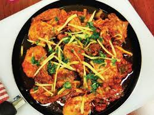

Chicken Karahi Recipe

Being busy too much and having so less time, And want to have some spice in your dinner
after a long day. And Want to build some muscle mass. Make Karahi in half an hour.
It is a thick tomato,ginger and garlic based thick masla curry filled with green chillies,
raw cut ginger and coriander. There are many alterations of Karahi; Balochi, Afghani, Peshawari etc.
But dont use the recipes which use onion, Because its not a Karahi if it is filled with onions,
Its just a Qorma
Ingredients
- Chicken 550g (Prefer Boneless)
- Ginger (for your own taste)
- Garlic (for your own taste)
- Tomatoes
- Green Chilli & Coriander
- Spices, You can make your own Spices, But here for the time dependency use Shan "Chicken Karahi Masala".
These spices elevate your tomatoes and ginger.
Method:
- Fry the chicken with the oil. Apologies to weight losing people, You guys can
add less oil, but chicken karahi needs that oil.
- Add a lot of minced ginger and garlic, make that paste fresh, dont use the canned or jar ones. And dont burn them
Just cook enough so you can get rid of the strong smell of ginger and garlic.
- Then add those tomatoes and the spice you make or Shan "Chicken Karahi Masala". The tomatoes will be crushed and transformed into thick spicy gravy thanks to the spices.
- Cook the mixture on high and keep stirring to avoid sticking the karahi in the pan
- Dont put the lid on, keep evaporating that moisture or the pan will be filled with water and chicken will not carry that spice and
instead will taste like boiled chicken separated from the spicy curry we made.